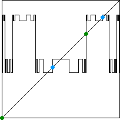

The next picture shows the 128th composition for s values
corresponding to a superstable
As we expect, the graph has 8 fixed points:
|  |
Graphical iteration of L4 shows that almost every point in the interval iterates to one of the points of the 4-cycle.
So the graph of the universla function is mostly horizontal segments, of height one of the values of the 4-cycle.
(Almost every because of course the fixed points and 2-cycle of L are fixed points of L4, so they remain fixed under iteration of L4. Similarly, points that iterate exactly to these fixed points do not iterate to the 4-cycle points.)
Return to the universal Function.